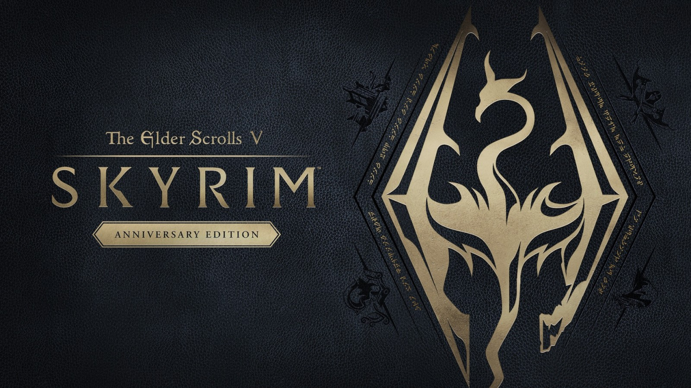

I have enjoyed playing games most of my life. Video games, text based RPGs, table-top games, etc. I hope to create and design games after I graduate.
I am an artist and designer. From digital media to painting, drawing and more, I can put together storyboards for a screenplay or a deck for a game idea.
Since I was able to get my drivers license, I have always enjoyed driving. I consider myself lucky to be able to support myself by driving mail for the USPS. I worked really hard to become a contract supplier.
To go along with driving, one of my favorite things to do is look at maps and see points of my interest that make me want to go there and see it. When I become less tied to one town for my children to go to school, I plan on expanding where my points of interest take me.
"You are not prepared." - Illidan Stormrage

"Looking to protect yourself, or deal some damage?"
"Five thousand dollars? For me? Can I turn myself in?"